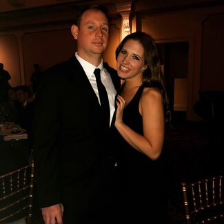

Hi! My name is Ian Hooper. I'm 31 years old, born and raised in Westchester, New York. I attended Villanova University (GO WILDCATS!!!) and graduated in 2010 with a Bachelor of Science Degree. I double majored in Finance and Management Information Systems (MIS). My double major led me to a career as an Operations Manager in Financial Services. I have been working for Interactive Brokers LLC (Ticker: IBKR) since I graduated from Villanova. As an Operations Manager for a heavily automated firm, I understand the importance of technology in the day-to-day operations of our industry.
Outside of work, I have a number of hobbies. I love playing basketball, playing poker, going to the movies, swimming and traveling with my wife, Emily. Some of my favorites places I've been thus far include New Orleans, Cooperstown, Portugal (Emily and I went for our honeymoon), and Ireland. I hope to inter-twine my hobbies with the knowledge I gain from the coding bootcamp. Perhaps I can even leverage this knowledge to create a business of my own one day!